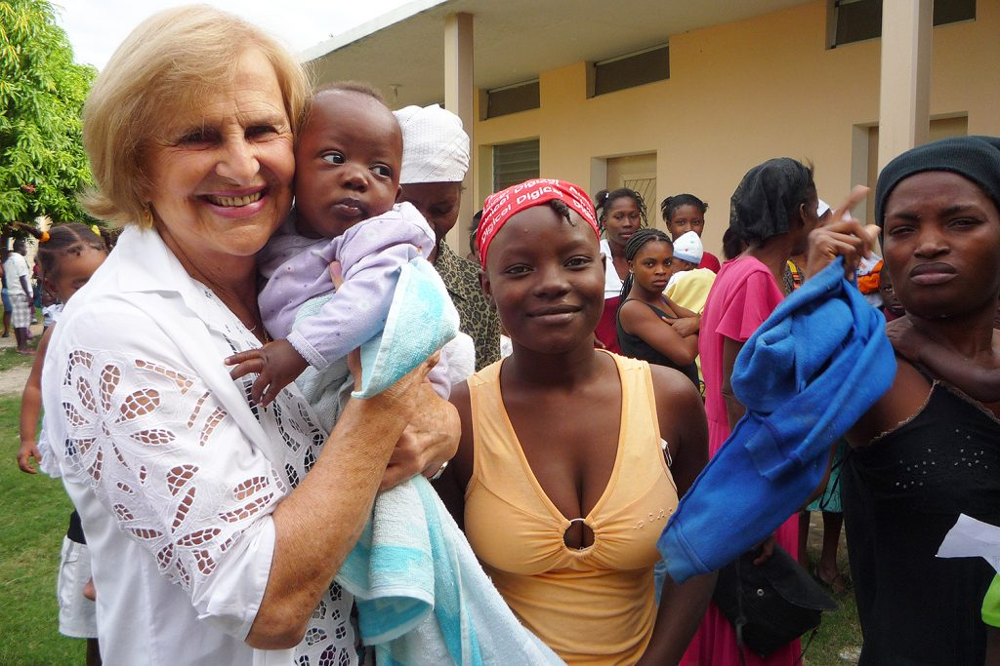

Saved Millions of Children's Lives Wielding Science With Faith.

Zilda Arns, Holding a Baby on The Left. One of the last pictures taken of Zilda Arns moments before the Haiti Earthquake(Jan, 2010). | Photo: Personal File/Sister Rosângela Altoé.
Dr. Zilda Arns Time Line
25/08/1934 - Born on the city of Forquilha - SC - Brasil
1953 - Started Medicine at the Federal University of Paraná(UFPR). Started treating children under 1 year of age due to the high number of deaths from easily treatable diseases such as diarrhea and dehydration.
17/11/1959 - Graduated from medicine and specialized in Pediatric Public Health aiming to reduce child mortality through education.
26/12/1959 - Married Aloission Bruno Neumann(m. 1959–1978) with whom she had 6 children.
18/02/1978 - Tragedy and sadness struck as Aloission Bruno Neumann passes away drowned, most likely due to a heart attack after saving his daughter from the rough sea at the beach.
1980 - Led the vaccination campaign to stop the poliomielite epidemic on the south of Brasil.
1983 - Founded the Child 's Pastoral with Dom Geraldo Majella Agnelo, Florestópolis - Paraná.
1984 - The First Pastoral achieves a remarkable reduction in infant death in Florestópolis in only one year. From 127 deaths for every 1000 children to 28 deaths for 1000 children and a 70% reduction in hospitalization.
1987 - Starts the " Home Made Rehydration Solution '' campaign, teaching mothers to produce the Solution to cure dehydration on small children.
1991 to 2010 - Counselor of the National Health Council of Brasil.
1993 to 1995 - Maternal-child Coordinator at the Health Ministry.
2001 - By 2001, with only R$0.86 it was possible to save a child's life.
2001 to 2003 - Nominated 3 times to the Nobel Prize by the Brasilian Government.
2007 - Awarded the Woodrow Wilson Prize.
2010 - By January of 2010 the Child's Pastoral was responsible for 1.350 million children through 200 thousand volunteers. Reducing infant death from 90 - 100 in 100.000 to 15 in 100.000 in two decades.
12/01/2010 - While on a humanitarian mission in Port-au-Prince - Haiti, Dr Zilda is called back inside the Sacré Coeur church to aid a child. The local time is 4:53 pm. A 7.0 magnitude earthquake takes the lives of 316 thousand people along with our "Brasilian Mother Teresa" Dr. Zilda Arns Neumann.